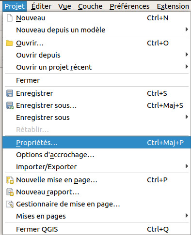

II. Géodésie
II.3 Couches et projets : à chacun son système
SCR du projet
 A partir de QGIS, ouvrez le projet regions_france.qgz situé dans le dossier TutoQGIS_02_geodesie/projets.
A partir de QGIS, ouvrez le projet regions_france.qgz situé dans le dossier TutoQGIS_02_geodesie/projets.
Toutes les couches chargées dans ce projet seront affichées dans le SCR du projet. Quel est ce SCR ? Trois manières pour accéder à cette information :
- Menu Projet → Propriétés...  , rubrique SCR
- Icône SCR actuel tout en bas à droite de la fenêtre de QGIS
- raccourci clavier Ctrl+Maj+P → rubrique SCR
La fenêtre suivante s'ouvre :
{kind=link}
1. Aucun SCR : cette case à cocher permet de visualiser facilement si les différentes couches d'un projet utilisent des SCR différents.
2. Partie "Filtre" : vous pouvez taper ici un code ou un nom pour rechercher un SCR précis.
3. SCR récemment utilisés (cette partie peut être vide). Cette liste permet d'accéder facilement aux SCR que vous utilisez souvent.
4. Liste de tous les SCR disponibles dans QGIS. Ils sont classés selon 3 grandes rubriques : systèmes de coordonnées géographiques, systèmes de coordonnées projetés et systèmes de coordonnées définis par l'utilisateur (soit qu'ils aient été créés par vous-même, soit qu'ils aient été lus par QGIS dans une couche).
5. SCR actuellement utilisé par le projet avec sa définition dans 2 formats, WKT et Proj4, et sa zone d'application (également visible dans la carte à droite)
La rubrique SCR de la fenêtre des propriétés du projet permet donc de modifier le système de coordonnées du projet, ou bien simplement de vérifier quel est ce système, ce que nous nous bornerons à faire pour le moment.
Le projet est en WGS84, comme indiqué dans la partie 5 de la fenêtre.
Notez également que le code EPSG du SCR du projet est indiqué tout en bas à droite de la fenêtre de QGIS, dans la barre d'état de QGIS.
{kind=link}
SCR d'une couche
Nous allons maintenant nous poser la question de savoir dans quel SCR est la couche REGION.
Ouvrez les propriétés de cette couche (double clic sur le nom de la couche) et allez dans la rubrique Information.
{kind=link}
Cette couche est en RGF93 / Lambert-93, code EPSG 2154.
Vous avez donc pu constater que notre projet et la couche qui y est présente ont deux SCR différents. Comment cela est-il possible ?
Projection à la volée
La projection à la volée est une fonctionnalité qui permet d'afficher des couches dans un autre SCR que le leur, le SCR du projet.
Ainsi, la couche REGION est affichée en WGS84 bien que son SCR soit le RGF93 Lambert93. Il s'agit bien uniquement d'une question d'affichage, le SCR de la couche n'est pas modifié.
Depuis la version 3 de QGIS, il n'est plus possible de désactive la projection à la volée. Toutes les couches sont donc toujours affichées dans le SCR du projet.
Il est donc possible de superposer plusieurs couches dans des SCR différents. C'est ce que nous allons vérifier!
Ajoutez la couche ne_110m_admin_0_countries.shp au projet. Vérifiez son SCR. Les deux couches doivent se superposer correctement (même si elles ont des niveaux de généralisation différents, elles ne présentent pas de décalage l'une par rapport à l'autre).
{kind=link}
chapitre précédent chapitre suivant
haut de page